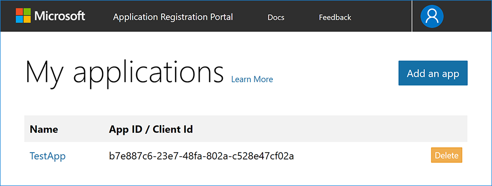
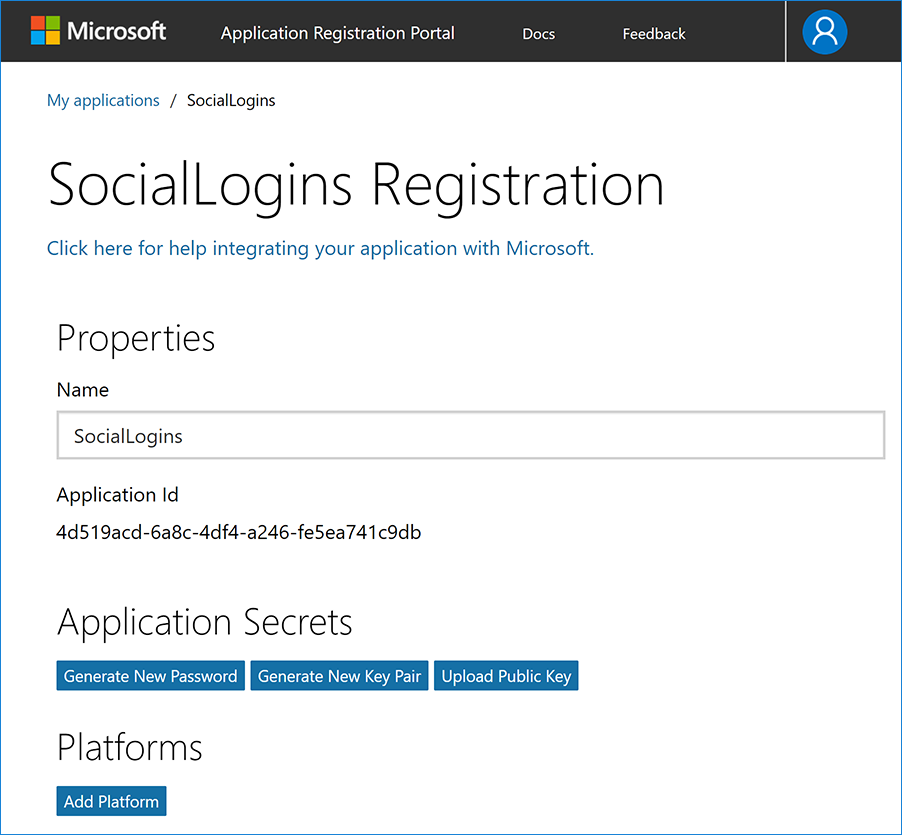
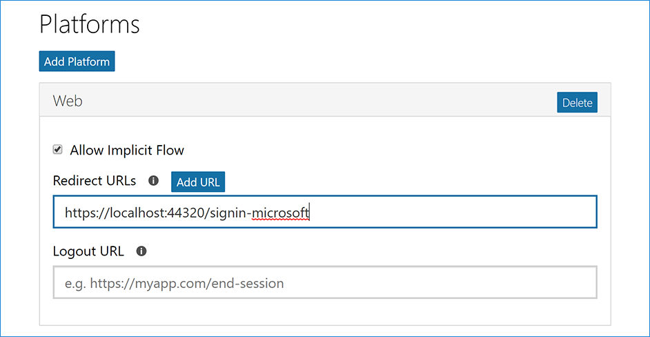

Configuring Microsoft Account authentication
By Valeriy Novytskyy and Rick Anderson
This tutorial shows you how to enable your users to sign in with their Microsoft account using a sample ASP.NET Core 2.0 project created on the previous page.
Create the app in Microsoft Developer Portal
- Navigate to https://apps.dev.microsoft.com and create or sign into a Microsoft account:

If you don't already have a Microsoft account, tap Create one! After signing in you are redirected to My applications page:

- Tap Add an app in the upper right corner and enter your Application Name and Contact Email:

For the purposes of this tutorial, clear the Guided Setup check box.
Tap Create to continue to the Registration page. Provide a Name and note the value of the Application Id, which you use as
ClientIdlater in the tutorial:

- Tap Add Platform in the Platforms section and select the Web platform:

- In the new Web platform section, enter your development URL with /signin-microsoft appended into the Redirect URLs field (for example:
https://localhost:44320/signin-microsoft). The Microsoft authentication scheme configured later in this tutorial will automatically handle requests at /signin-microsoft route to implement the OAuth flow:

Tap Add URL to ensure the URL was added.
Fill out any other application settings if necessary and tap Save at the bottom of the page to save changes to app configuration.
When deploying the site you'll need to revisit the Registration page and set a new public URL.
Store Microsoft Application Id and Password
Note the
Application Iddisplayed on the Registration page.Tap Generate New Password in the Application Secrets section. This displays a box where you can copy the application password:

Link sensitive settings like Microsoft Application ID and Password to your application configuration using the Secret Manager. For the purposes of this tutorial, name the tokens Authentication:Microsoft:ApplicationId and Authentication:Microsoft:Password.
Configure Microsoft Account Authentication
The project template used in this tutorial ensures that Microsoft.AspNetCore.Authentication.MicrosoftAccount package is already installed.
- To install this package with Visual Studio 2017, right-click on the project and select Manage NuGet Packages.
To install with .NET Core CLI, execute the following in your project directory:
dotnet add package Microsoft.AspNetCore.Authentication.MicrosoftAccount
Add the Microsoft Account service in the ConfigureServices method in Startup.cs file:
services.AddIdentity<ApplicationUser, IdentityRole>()
.AddEntityFrameworkStores<ApplicationDbContext>()
.AddDefaultTokenProviders();
services.AddAuthentication().AddMicrosoftAccount(microsoftOptions =>
{
microsoftOptions.ClientId = Configuration["Authentication:Microsoft:ApplicationId"];
microsoftOptions.ClientSecret = Configuration["Authentication:Microsoft:Password"];
});
Note: The call to AddIdentity configures the default scheme settings. The AddAuthentication(string defaultScheme) overload sets the DefaultScheme property; and, the AddAuthentication(Action<AuthenticationOptions> configureOptions) overload sets only the properties you explicitly set. Either of these overloads should only be called once when adding multiple authentication providers. Subsequent calls to it have the potential of overriding any previously configured AuthenticationOptions properties.
Although the terminology used on Microsoft Developer Portal names these tokens ApplicationId and Password, they are exposed as ClientId and ClientSecret to the configuration API.
See the MicrosoftAccountOptions API reference for more information on configuration options supported by Microsoft Account authentication. This can be used to request different information about the user.
Sign in with Microsoft Account
Run your application and click Log in. An option to sign in with Microsoft appears:

When you click on Microsoft, you are redirected to Microsoft for authentication. After signing in with your Microsoft Account (if not already signed in) you will be prompted to let the app access your info:

Tap Yes and you will be redirected back to the web site where you can set your email.
You are now logged in using your Microsoft credentials:

Troubleshooting
If the Microsoft Account provider redirects you to a sign in error page, note the error title and description query string parameters directly following the
#(hashtag) in the Uri.Although the error message seems to indicate a problem with Microsoft authentication, the most common cause is your application Uri not matching any of the Redirect URIs specified for the Web platform.
- ASP.NET Core 2.x only: If Identity is not configured by calling
services.AddIdentityinConfigureServices, attempting to authenticate will result in ArgumentException: The 'SignInScheme' option must be provided. The project template used in this tutorial ensures that this is done. - If the site database has not been created by applying the initial migration, you will get A database operation failed while processing the request error. Tap Apply Migrations to create the database and refresh to continue past the error.
Next steps
This article showed how you can authenticate with Microsoft. You can follow a similar approach to authenticate with other providers listed on the previous page.
Once you publish your web site to Azure web app, you should create a new
Passwordin the Microsoft Developer Portal.Set the
Authentication:Microsoft:ApplicationIdandAuthentication:Microsoft:Passwordas application settings in the Azure portal. The configuration system is set up to read keys from environment variables.